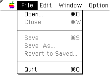
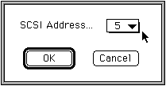

★
SOUND Manual
★
SCSP/DSPパラメータエディタユーザーズマニュアル
▲
戻る
｜
進む
▼
SCSP/DSPパラメータエディタユーザーズマニュアル
2.メニュー構成
■Fileメニュー

Open...
アセンブル済み(実行形式)のDSPプログラムを標準ファイルダイアログから選択し、これをSCSPにダウンロードします。pEditで取り扱うことのできるファイルは、SCSP/DSPアセンブラ「dAsms」で作成したDSPプログラム実行形式ファイル（拡張子「.EXC」）のみです。
Save
pEditで変更を加えたDSPプログラムを、ファイル名を変えずに実行形式でセーブします。
SaveAs...
pEditで変更を加えたDSPプログラムを、標準ファイルダイアログからファイル名を新たに設定したうえで、実行形式でセーブします。
RevertToSaved
現在編集中のパラメータを、編集を加える前(最後にセーブした時点)の状態に戻します。
Close
現在OpenしているDSPプログラムの編集を終了します。パラメータに変更が加えられていてセーブされていない場合は、セーブするかどうかの確認が行われます。Close実行時、pEdit側では内部データを破棄しますが、DSPハードウェア上のプログラム、データはクリアしません。
Quit
pEditを終了します。
■Editメニュー
Find
DSPプログラム上で定義された係数、アドレスのシンボル名を検索します。Find機能については、後述の「
Find機能
」の項目を参照してください。
Full Address
？？？？？？？？？？？？？？？？？？？？？？？？？？
Windowメニュー
Address
DSPが外部メモリへのアクセスに使用するアドレス定数のエディットウィンドウを開きます。
Coef
DSPが演算に使用する係数のエディットウィンドウを開きます。
■Optionメニュー
SCSI ID
pEditは起動後、最初にDownloadを実行する際に、開発用ハードウエア(ボード)のSCSI IDを自動的に認識し、以後そのSCSI IDに対してデータの送受信を行います。したがって、通常はこのコマンドを使用する必要はありません。

警 告
開発用ハードウエア(ボード)のSCSI IDは、その他に接続されている全てのSCSIデバイスと異なる番号に設定されていなければなりません。 設定に誤りがある場合は、SCSIデバイス上のデータが失われる等の問題が発生する可能性があります。
▲
戻る
｜
進む
▼
★
SOUND Manual
★
SCSP/DSPパラメータエディタユーザーズマニュアル
Copyright SEGA ENTERPRISES, LTD., 1997
 ★SOUND Manual
★SCSP/DSPパラメータエディタユーザーズマニュアル
★SOUND Manual
★SCSP/DSPパラメータエディタユーザーズマニュアル
★SOUND Manual
★SCSP/DSPパラメータエディタユーザーズマニュアル
★SOUND Manual
★SCSP/DSPパラメータエディタユーザーズマニュアル